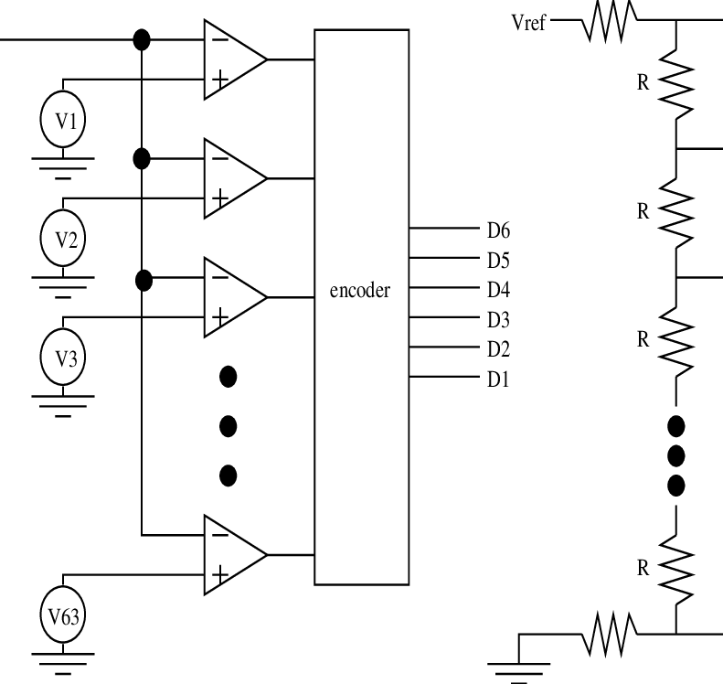
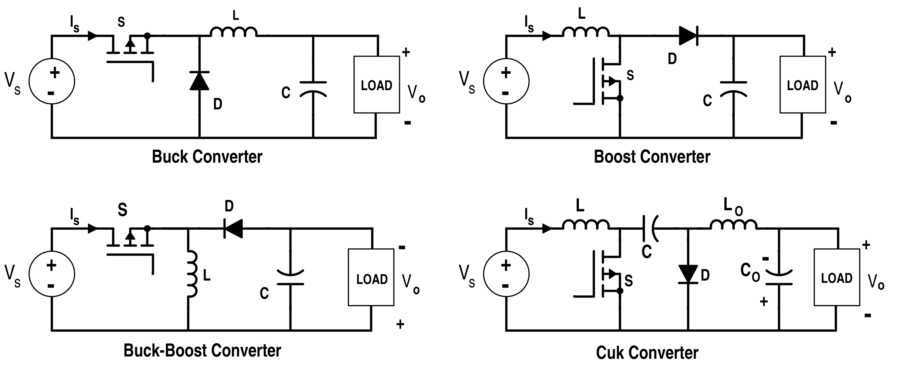

This section focuses on the conversion and control of electric power using semiconductor devices. Power electronics is essential for renewable energy, electric vehicles, motor drives, and industrial automation.
1️⃣ Power Semiconductor Devices
Diode: Unidirectional switch; conducts only in forward-biased mode
Thyristor (SCR): Controlled switch; once triggered, stays ON until current goes to zero
MOSFET: Fast switching, used in low to medium power applications
IGBT: Combines MOSFET’s gate control with BJT’s low conduction loss — ideal for high power
Choose devices based on voltage, current, speed, and control method required.
⚡ 2. Power Converter Types
AC to DC: Rectifiers (half-wave, full-wave, bridge)
DC to AC: Inverters (square wave, modified sine, PWM)
DC to DC: Choppers (step-up/step-down)
AC to AC: Cycloconverters or AC voltage controllers

🔁 3. Controlled Rectifiers
Use thyristors to control output voltage:
Single-phase Half-controlled Bridge: Mix of diodes and SCRs
Fully-controlled Bridge: Four SCRs with firing angle α
Output Voltage (Vavg) for Full-controlled Bridge:Vavg = (2Vm / π) · cos(α)
Above is a full-wave rectified waveform typically produced by bridge circuits.
🔄 4. Inverters
Convert DC to AC. Key techniques:
Square wave: Simplest, high harmonic content
Sine PWM: Controls pulse width to approximate sine output
Switching Frequency: Impacts output quality and filter size. Typically >10 kHz for PWM inverters.
🔋 5. DC-DC Converters
Buck Converter: Steps voltage down
Boost Converter: Steps voltage up
Buck-Boost: Can invert and regulate voltage

🌀 6. Applications
Electric Vehicle Drives
Solar Inverters
Switch Mode Power Supplies (SMPS)
UPS Systems
HVDC Transmission
📊 7. Practice Quiz
Q1: What is the role of firing angle α in a controlled rectifier?
Answer: It determines when the SCR turns ON, controlling average output voltage.
Q2: What device is preferred in high-speed switching applications?
Answer: MOSFET
Q3: How does a buck converter regulate voltage?
Answer: By switching a transistor and controlling duty cycle.